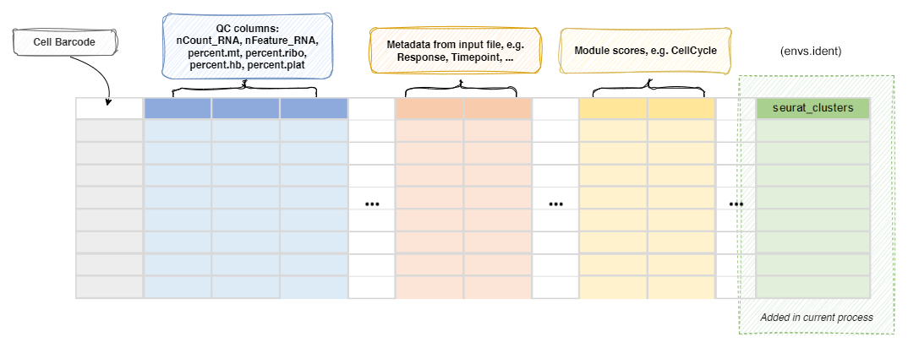

SeuratMap2Ref¶
Map the seurat object to reference
See: https://satijalab.org/seurat/articles/integration_mapping.html and https://satijalab.org/seurat/articles/multimodal_reference_mapping.html
Note
If you have other annotation processes, including SeuratClustering
process or CellTypeAnnotation process enabled in the same run,
you may want to specify a different name for the column to store the mapped cluster information
using envs.ident, so that the results from different annotation processes won't overwrite each other.
Input¶
sobjfile: The seurat object
Output¶
outfile: Default:{{in.sobjfile | stem}}.qs.
The rds file of seurat object with cell type annotated.
Note that the reduction name will beref.umapfor the mapping.
To visualize the mapping, you should useref.umapas the reduction name.
Environment Variables¶
ncores(type=int;order=-100): Default:1.
Number of cores to use.
Whensplit_byis used, this will be the number of cores for each object to map to the reference.
Whensplit_byis not used, this is used infuture::plan(strategy = "multicore", workers = <ncores>)to parallelize some Seurat procedures.
See also: https://satijalab.org/seurat/archive/v3.0/future_vignette.htmlmutaters(type=json): Default:{}.
The mutaters to mutate the metadata.
This is helpful when we want to create new columns forsplit_by.
See https://pwwang.github.io/biopipen.utils.R/reference/MutateSeuratMeta.html.use: A column name of metadata from the reference (e.g.celltype.l1,celltype.l2) to transfer to the query as the cell types (ident) for downstream analysis. This field is required.
If you want to transfer multiple columns, you can useenvs.MapQuery.refdata.ident: Default:seurat_clusters.
The name of the ident for query transferred fromenvs.useof the reference.ref: The reference seurat object file.
Either an RDS file or a h5seurat file that can be loaded bySeurat::LoadH5Seurat().
The file type is determined by the extension..rdsor.RDSfor RDS file,.h5seurator.h5for h5seurat file.refnorm(choice): Default:auto.
Normalization method the reference used. The same method will be used for the query.LogNormalize: UsingNormalizeData.SCTransform: UsingSCTransform.SCT: Alias of SCTransform.auto: Automatically detect the normalization method.
If the default assay of reference isSCT, thenSCTransformwill be used.
split_by: The column name in metadata to split the query into multiple objects.
This helps when the original query is too large to process.skip_if_normalized: Default:True.
Skip normalization if the query is already normalized.
Since the object is supposed to be generated bySeuratPreparing, it is already normalized.
However, a different normalization method may be used.
If the reference is normalized by the same method as the query, the normalization can be skipped.
Otherwise, the normalization cannot be skipped.
The normalization method used for the query set is determined by the default assay.
IfSCT, thenSCTransformis used; otherwise,NormalizeDatais used.
You can set this toFalseto force re-normalization (with or without the arguments previously used).SCTransform(ns): Arguments forSCTransform()do-correct-umi(flag): Default:False.
Place corrected UMI matrix in assay counts layer?do-scale(flag): Default:False.
Whether to scale residuals to have unit variance?do-center(flag): Default:True.
Whether to center residuals to have mean zero?<more>: See https://satijalab.org/seurat/reference/sctransform.
Note that the hyphen (-) will be transformed into.for the keys.
NormalizeData(ns): Arguments forNormalizeData()normalization-method: Default:LogNormalize.
Normalization method.<more>: See https://satijalab.org/seurat/reference/normalizedata.
Note that the hyphen (-) will be transformed into.for the keys.
FindTransferAnchors(ns): Arguments forFindTransferAnchors()normalization-method(choice): Name of normalization method used.LogNormalize: Log-normalize the data matrixSCT: Scale data using the SCTransform methodauto: Automatically detect the normalization method.
Seeenvs.refnorm.
reference-reduction: Name of dimensional reduction to use from the reference if running the pcaproject workflow.
Optionally enables reuse of precomputed reference dimensional reduction.<more>: See https://satijalab.org/seurat/reference/findtransferanchors.
Note that the hyphen (-) will be transformed into.for the keys.
MapQuery(ns): Arguments forMapQuery()reference-reduction: Name of reduction to use from the reference for neighbor findingreduction-model:DimReducobject that contains the umap model.refdata(type=json): Default:{}.
Extra data to transfer from the reference to the query.<more>: See https://satijalab.org/seurat/reference/mapquery.
Note that the hyphen (-) will be transformed into.for the keys.
cache(type=auto): Default:/tmp.
Whether to cache the information at different steps.
IfTrue, the seurat object will be cached in the job output directory, which will be not cleaned up when job is rerunning.
The cached seurat object will be saved as<signature>.<kind>.RDSfile, where<signature>is the signature determined by the input and envs of the process.
See https://github.com/satijalab/seurat/issues/7849, https://github.com/satijalab/seurat/issues/5358 and https://github.com/satijalab/seurat/issues/6748 for more details also about reproducibility issues.
To not use the cached seurat object, you can either setcachetoFalseor delete the cached file at<signature>.RDSin the cache directory.plots(type=json): Default:{'Mapped Identity': Diot({'features': '{ident}:{use}'}), 'Mapping Score': Diot({'features': '{ident}.score'})}.
The plots to generate.
The keys are the names of the plots and the values are the arguments for the plot.
The arguments will be passed tobiopipen.utils::VizSeuratMap2Ref()to generate the plots.
The plots will be saved to the output directory.
See https://pwwang.github.io/biopipen.utils.R/reference/VizSeuratMap2Ref.html.
Details¶
Preparing a Seurat reference for mapping¶
Step 0: Create the Seurat reference object¶
Start from raw counts.
reference <- CreateSeuratObject(counts = reference_counts)
At this stage the object should contain at least:
- RNA counts
- cell barcodes
Step 1: Choose normalization strategy¶
Two main normalization strategies are supported for reference mapping.
Option A — LogNormalize workflow¶
Recommended for:
- standard scRNA-seq
- single modality datasets
- smaller references
reference <- NormalizeData(reference, normalization.method = "LogNormalize", scale.factor = 10000)
reference <- FindVariableFeatures(reference, selection.method = "vst", nfeatures = 2000)
reference <- ScaleData(reference)
This produces the normalized expression matrix used for PCA.
Option B — SCTransform workflow¶
Recommended for:
- large datasets
- heterogeneous samples
- multimodal references (e.g. CITE-seq)
reference <- SCTransform(reference, verbose = FALSE)
Important notes:
- Creates an SCT assay
- Variable features and scaling are performed automatically
- Mapping later requires
normalization.method = "SCT"
Step 2: Choose dimensional reduction¶
The reference must contain a dimensional reduction used for mapping.
Option A — PCA (standard references)¶
Used with LogNormalize.
reference <- RunPCA(reference, verbose = FALSE)
Typical usage:
- 30-50 PCs
Option B — SPCA (supervised PCA)¶
Used with SCTransform references and often in multimodal workflows.
reference <- RunSPCA(reference, assay = "SCT")
SPCA learns a projection supervised by a cell‑cell similarity graph and is commonly used in reference atlases.
Step 3: Compute neighbors and clustering (optional but recommended)¶
Precomputing neighbors allows faster anchor finding.
PCA reference¶
reference <- FindNeighbors(reference, reduction = "pca", dims = 1:30)
reference <- FindClusters(reference, resolution = 0.5)
SPCA / multimodal reference¶
reference <- FindMultiModalNeighbors(
reference,
reduction.list = list("spca"),
dims.list = list(1:30)
)
This creates a weighted nearest neighbor (WNN) graph.
Step 4: Compute UMAP and store the model¶
To allow MapQuery to project new cells into the same UMAP space, the model must be saved.
reference <- RunUMAP(
reference,
reduction = "pca",
dims = 1:30,
return.model = TRUE
)
For WNN references:
reference <- RunUMAP(
reference,
nn.name = "weighted.nn",
reduction.name = "wnn.umap",
return.model = TRUE
)
Storing the model enables ProjectUMAP / MapQuery to reuse the trained embedding.
Step 5: Annotate the reference¶
Reference mapping transfers metadata labels.
Add cell type annotations to metadata:
reference$celltype <- annotated_celltypes
reference$celltype_l1 <- broad_labels
reference$celltype_l2 <- fine_labels
Any metadata field can later be transferred.
Step 6: Save the reference¶
saveRDS(reference, "reference.rds")
Or save it in qs2 format for faster loading:
biopipen.utils::save_obj(reference, "reference.qs")
This allows the reference to be reused across multiple mapping runs.
Prepare the query dataset (can be done with SeuratPreparing process)¶
The query must use the same normalization method as the reference.
If the query is not normalized in the same way as the reference, you can specify arguments
in envs.NormalizeData or envs.SCTransform for this process to reproduce the same normalization.
You can also specify envs.skip_if_normalized = false to force re‑normalization of the query dataset.
Find transfer anchors (arguments specified in envs.FindTransferAnchors)¶
Anchors link cells between the query and reference.
LogNormalize reference¶
anchors <- FindTransferAnchors(
reference = reference,
query = query,
reference.reduction = "pca",
dims = 1:30,
normalization.method = "LogNormalize"
)
SCTransform reference¶
anchors <- FindTransferAnchors(
reference = reference,
query = query,
reference.reduction = "spca",
dims = 1:30,
normalization.method = "SCT"
)
Optional useful parameters:
reference.assay = "SCT"recompute.residuals = TRUEreference.neighbors = "pca.nn"(reuse neighbor index if precomputed)
Map the query (arguments specified in envs.MapQuery)¶
query <- MapQuery(
anchorset = anchors,
query = query,
reference = reference,
refdata = list(celltype = "celltype"),
reference.reduction = "pca",
reduction.model = "umap"
)
MapQuery performs:
TransferDataIntegrateEmbeddingsProjectUMAP
The query cells will:
- receive predicted cell type labels
- be projected into the reference UMAP
The reference UMAP reduction is reused and saved in the query object as ref.umap.
Decision summary¶
| Reference type | Normalization | Reduction | Typical use |
|---|---|---|---|
| Standard scRNA‑seq | LogNormalize | PCA | Single modality datasets |
| Large / atlas reference | SCTransform | SPCA | Large heterogeneous datasets |
| Multimodal reference | SCTransform | SPCA + WNN | CITE‑seq / multimodal integration |
Important rules¶
- Query and reference must use the same normalization strategy.
- The reference dimensional reduction must already exist.
- Metadata labels in the reference are required for label transfer.
- Store a UMAP model (
return.model = TRUE) to enable projection. - Precomputing neighbors improves performance for repeated mapping.
- Use
ref.umapfor consistent visualization of mapped query cells.
Practical advice¶
For high-quality reference atlases:
- integrate multiple datasets first
- curate annotations carefully
- use ~30-50 PCs
- keep metadata hierarchy (broad → fine labels)
The reference effectively acts as a pretrained cell atlas that new datasets can be projected onto.
Metadata¶
The metadata of the Seurat object will be updated with the cluster
assignments (column name determined by envs.name):
